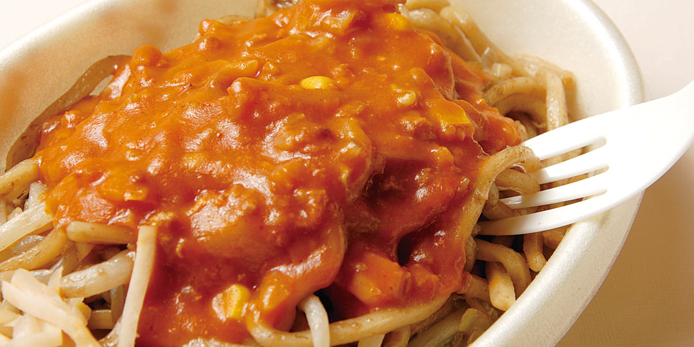

三重のおすすめグルメ
近所にある海が見える喫茶店
海の音とチーズの滑らかな味わいでハーモニーを奏でます。

中国のおすすめグルメ
臭いなのに美味い！柳州螺蛳粉（ルオスーフェン)
螺蛳粉の大きな特徴の一つは独特の臭気。しかしこの臭いが原因で有名になり、
この「臭い」がなくなったら、まるで炭酸ガスの抜けたコーラのように受け入れられないようだ。
身体が温まるのはいいが、日本人だと臭いに抵抗のある人は少なくないだろう。
臭いと辛さ、酸味がそれぞれ強く主張する一品、
チャレンジ精神のある方は試してみてはいかがだろうか。

新潟のおすすめグルメ
新潟のソウルフード
新潟県民が愛する「みかづき」のイタリアンです。
太い麺に甘いソースがよく絡んで、新潟に来たら何としてでも
食べたい逸品です。
埼玉のおすすめグルメ
香川にも負けないぞ！隠れうどん県埼玉
埼玉県はなんと生産量全国第二位の隠れうどん県なんです。
私の住んでいる加須には４０以上ものうどん屋さんがあり、
手打ちうどん味を競い合っています。
川崎のおすすめグルメ
川崎の味 元祖ニュータンタン
豚ガラ塩味ベースのスープに挽肉、ニンニク、玉子をからませ、
粗挽き唐辛子でパンチをきかせた絶妙な仕上がり、
一度食べたらクセになる美味しさです。

福島のおすすめグルメ
喜多方ラーメン、心温まる一杯
透き通るスープと弾力のある麺が織りなす至高の一杯。
豊かな風味が心を満たします。